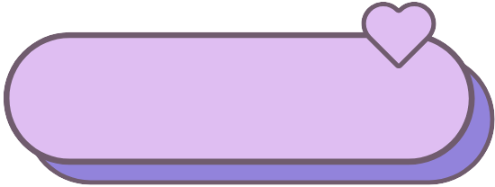

- 
-
using previous seq
- return


introduction of this function introduction of this function introduction of this function introduction of this function introduction of this function introduction of this function introduction of this function introduction of this function introduction of this function introduction of this function introduction of this function introduction of this function